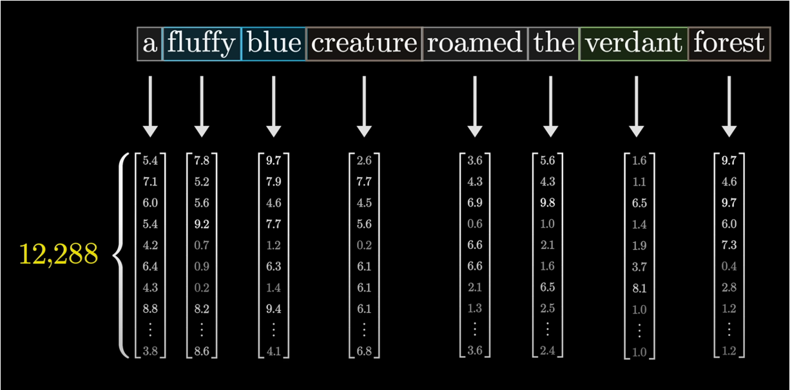
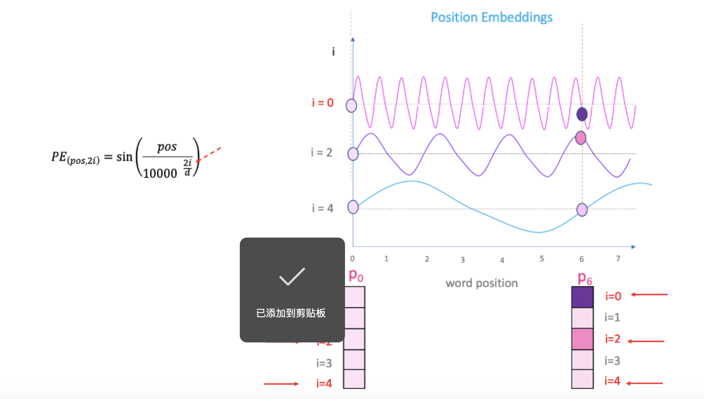
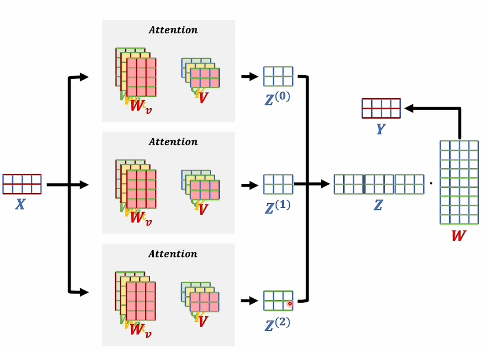
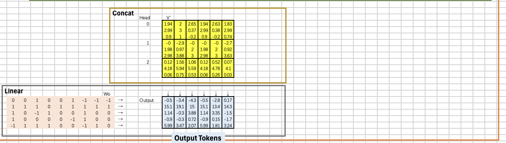
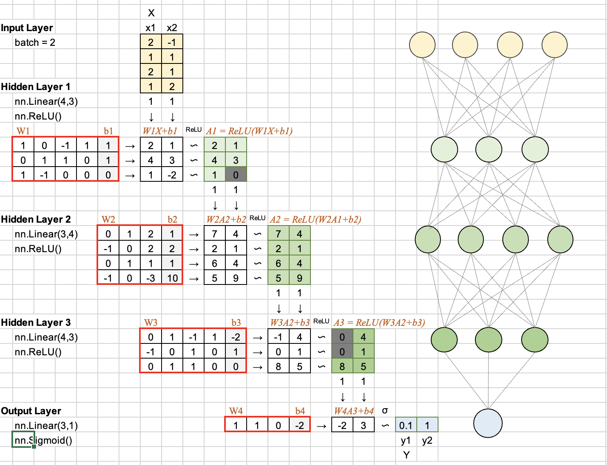

00 · OVERVIEW
先记住一条主线：文字不断换“表示方式”
Transformer 不是把一句话丢进一个黑盒。它先把文字变成编号，再变成向量，让 token 互相交换信息，最后把每个位置映射成词表概率。
通俗类比：Token ID 像学生证号；Embedding 是学生的 64 项档案；Attention 是一场小组讨论；FFN 是每个人独立消化；最后的 Linear + Softmax 是根据讨论结果做 20 选 1。
01 · TOKENIZER
第一步：把“我爱学习大语言模型”变成数字
神经网络不认识汉字，只认识数字。Notebook 先用语料构造词表，再把每个字符映射为 token ID。
我ID 15
爱ID 17
学ID 14
习ID 11
大ID 13
语ID 19
言ID 18
模ID 16
型ID 12
代码做了什么？
token_to_id 是“字符 → 编号”的字典，id_to_token 则负责反查。输入最终变成形状为 [1, 9] 的整数张量。
文字 → token → token ID → torch.tensor
别被类名骗了：这里虽然叫
SimpleBPE，但 encode() 没有使用训练出的 merge 规则，所以当前示例更接近“字符级 tokenizer”。SimpleBPE.encode[1, 9]
def encode(self, text):
tokens = ['▁']
for char in text:
if char in self.token_to_id:
tokens.append(char)
else:
tokens.extend(['<unk>', char])
return [self.token_to_id[t]
for t in tokens
if t in self.token_to_id]02 · EMBEDDING
Embedding：把一个编号翻译成 64 个可学习的数字
ID 只表示“是谁”，没有语义距离。Embedding 查表后，每个 token 变成 64 维向量；训练时，相似 token 的向量会逐渐靠近。

为什么还要乘 √64？
位置编码的数值大约落在 -1 到 1。Embedding 乘上 √d_model = 8 后，词向量不会被位置信号淹没。
X = Embedding(token_ids) × √64
形状变化：[1, 9] → [1, 9, 64]。序列长度仍是 9，只是每个位置从 1 个编号变成 64 个特征。
查看 Embedding 对应代码
Embedding.forwardPyTorch
class Embedding(nn.Module):
def __init__(self, vocab_size, d_model):
super().__init__()
self.embedding = nn.Embedding(vocab_size, d_model)
self.d_model = d_model
def forward(self, x):
output = self.embedding(x) * math.sqrt(self.d_model)
return output03 · POSITIONAL ENCODING
位置编码：让模型知道“谁在前、谁在后”
Self-Attention 本身不带顺序感。“我爱你”和“你爱我”如果没有位置编码，只是一组相同 token。Notebook 用不同频率的 sin/cos 波给每个位置盖章。

偶数维用 sin，奇数维用 cos
PE(pos, 2i) = sin(pos / 10000^(2i/d))
PE(pos, 2i+1) = cos(pos / 10000^(2i/d))
最终不是替换词向量，而是直接相加：x + pe。形状仍然是 [1, 9, 64]。
为什么需要很多频率？
高频维度擅长区分邻近位置，低频维度能表达更长距离。把它们组合起来，就像用“时针 + 分针 + 秒针”共同描述时间。
关键点：
register_buffer('pe', pe) 表示位置编码跟模型一起移动到 CPU/GPU，但它不是需要训练的参数。04 · MULTI-HEAD ATTENTION
多头注意力：让每个 token 去“问”其他 token
Q 是“我想找什么”，K 是“我能提供什么标签”，V 是“真正要汇总的内容”。每个 Query 和所有 Key 做相似度计算，再用权重对 Value 加权求和。
输入
[1,9,64]Q/K/V 线性层
[1,9,64]拆成 4 头
[1,4,9,16]分数矩阵
[1,4,9,9]加权 V
[1,4,9,16]合并 + Wo
[1,9,64]
这份代码如何拆头？
d_model = 64，num_heads = 4，所以每个 head 的维度 d_k = 16。
64 维 = 4 个 head × 每头 16 维
view(..., 4, 16) 负责拆分，transpose(1, 2) 把 head 维提前，便于并行矩阵乘法。
选择 Head
选择 Query
这个格子图只展示结构，不是假装还原真实权重。Notebook 只打印了
attn_weights.mean()，没有保存完整注意力矩阵。由于每个 Query 对 9 个 Key 的 Softmax 权重之和恒为 1，所以全局均值自然约等于 1/9 = 0.1111；这个均值不能说明模型关注了谁。
查看多头注意力核心代码
MultiHeadAttention.forwardQ · Kᵀ → Softmax → V
# [B,S,64] → [B,4,S,16]
Q = self.Wq(Q).view(batch_size, -1, self.num_heads, self.d_k).transpose(1, 2)
K = self.Wk(K).view(batch_size, -1, self.num_heads, self.d_k).transpose(1, 2)
V = self.Wv(V).view(batch_size, -1, self.num_heads, self.d_k).transpose(1, 2)
scores = torch.matmul(Q, K.transpose(-2, -1)) / math.sqrt(self.d_k)
attn_weights = torch.softmax(scores, dim=-1)
output = torch.matmul(attn_weights, V)
# [B,4,S,16] → [B,S,64]
output = output.transpose(1, 2).contiguous().view(batch_size, -1, self.d_model)
output = self.Wo(output)05 · FFN + ENCODER LAYER
Attention 负责“交流”，FFN 负责“各自消化”
Attention 在 token 之间混合信息；FFN 则对每个 token 独立使用同一套两层网络。中间先扩到 128 维，再压回 64 维，给模型更大的非线性表达空间。

FFN 的形状变化
64 → Linear → 128 → ReLU → Linear → 64
它不会改变 batch 和序列长度：[1, 9, 64] → [1, 9, 64]。
为什么先放大？可以把 128 维看作更多“思考槽位”。ReLU 筛选出有用响应，再压回主干维度。
Self-Attention
看其他 token→
残差 + LayerNorm
x + attn(x)→
FFN + 残差 + Norm
x + ffn(x)残差连接像“保留原稿再修改”：如果新子层暂时没学好，原始信息仍能沿着捷径传下去；LayerNorm 则把每个 token 的特征尺度拉回稳定范围。
查看 EncoderLayer 对应代码
EncoderLayer.forwardPost-Norm
def forward(self, x):
attn_output = self.self_attn(x, x, x)
x = self.norm1(x + self.dropout(attn_output))
ffn_output = self.ffn(x)
x = self.norm2(x + self.dropout(ffn_output))
return x06 · LOGITS + SOFTMAX
两层 Encoder 之后，把 64 维映射回 20 个词表分数
模型循环执行两次 EncoderLayer，然后通过 nn.Linear(64, vocab_size) 得到 logits。Softmax 把任意实数变成总和为 1 的概率。
本次 Notebook 的输出
[1, 9, 64] → Linear → [1, 9, 20]
最后一个 token 的 top 3 概率如下。Notebook 只打印了概率值，没有打印对应 token ID，因此这里按排名展示，不猜测词项。
为什么不能解读成预测结果？
模型参数刚随机初始化，没有执行训练；同时模型仍处于训练模式，Dropout 会随机丢弃一部分值。
所以：重新运行 Notebook，logits 和 top 3 概率可能变化。这些数字只能证明前向传播与形状正确，不能证明模型学会了中文。
查看 Notebook 本次运行日志
cell 12 output关键形状
Tokenized IDs: [15, 17, 14, 11, 13, 19, 18, 16, 12]
Embedding: torch.Size([1, 9, 64])
位置编码: torch.Size([1, 9, 64])
第 1 层 Attention: torch.Size([1, 9, 64])
第 2 层 Attention: torch.Size([1, 9, 64])
Linear logits: torch.Size([1, 9, 20])
最终概率: torch.Size([1, 9, 20])
Top 3: [0.125233, 0.106680, 0.089245]07 · READ THE CODE HONESTLY
这份手搓代码适合学什么，不适合证明什么
教学代码最重要的价值是建立骨架感。把边界说清楚，反而更容易知道下一步该补哪块。
它做得好的地方
- 模块边界清楚：Tokenizer、Embedding、Position、Attention、FFN、Encoder。
- 多头拆分与合并的张量变换正确，形状链条完整。
- 包含残差、Dropout 与 LayerNorm，不只是孤立 Attention。
- 打印关键形状，适合逐层调试和建立直觉。
它有意简化的地方
SimpleBPE.encode未应用 merge 规则，不是标准 BPE。mask参数没有真正用于 scores，无法做 padding/causal mask。- 只有 Encoder，没有 Decoder 和交叉注意力。
- 没有训练循环、loss、optimizer、数据集和随机种子。
- 只打印注意力均值，无法解释具体 token 的关注关系。
建议的下一步：先补
random seed + model.eval() 让结果可复现；再真正应用 mask 并可视化完整 attention matrix；最后增加训练目标，看 loss 是否下降。不要一上来就堆 Decoder。- batch_size = 1
- 一次只处理一句话。
- seq_len = 9
- 这句话被分成 9 个字符 token。
- d_model = 64
- 模型主干中每个 token 的表示维度。
- num_heads = 4
- 并行使用 4 套不同的关注视角。
- d_k = 16
- 每个注意力头分到的特征维度。
- d_ff = 128
- FFN 中间层扩张后的维度。